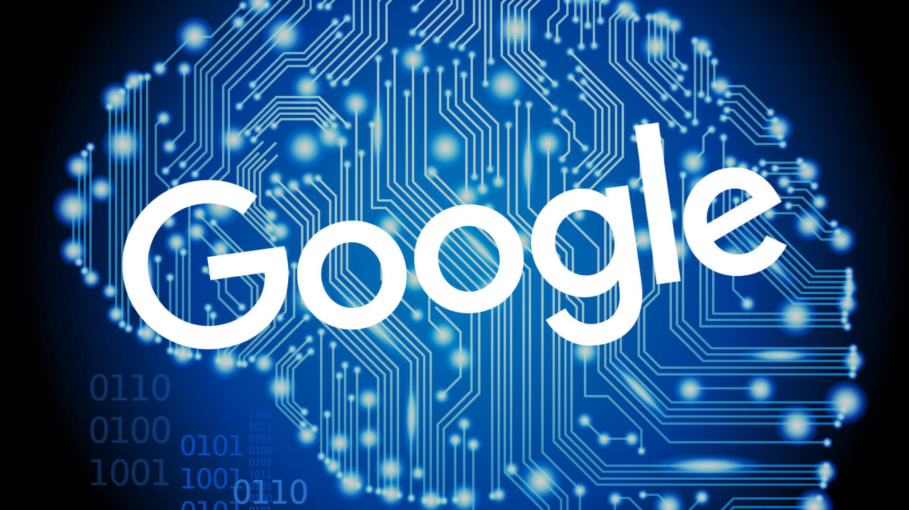

Intelligences Artificielles
Voici quelques exemples d'intelligences artificielles connues :

L'assistant personnalisé de Google, appelé Google Home, est un très bon exemple d'intelligence artificielle. Demandez lui n'importe quoi, il sera toujours là pour vous répondre. Pour l'activer, il suffit de dire "Ok Google" et il répondra à votre question. Que ce soit pour la météo, chercher sur le web ou trouver des blagues, Google Home devient de plus en plus performant et commence à se faire une place dans le foyer de l'Homme.
Il n'y a pas que Google qui développe des assistants personels, Amazon a récemment développé Alexia, une intelligence fonctionnant sur le même principe que Google. On retrouve la formule de départ pour activer l'assistant qui est "Alexia" puis l'appareil nous répond. Il remplit un peu près les mêmes fonctionnalités que son homologue chez Google. La bataille commerciale est lancé!

Cette intelligence artificielle, crée par Greg Corrado, est moins connu du grand public, elle s'appelle Rankbrain. Cette algorithme fonctionne sur un principe de réseaux de neurones, d'un apprentissage automatique. Google veut mieux comprendre l'intention des recherches des utilisateurs pour leur fournir la meilleur pertinence possible. Rankbrain se charge donc de traduire la requête de l'internaute au moteur de recherche pour améliorer encore son interprétation. Comme quoi, les intelligences artificielles sont partout!